Last Updated: 2020-07-17
Codelabs are interactive instructional tutorials, which can be authored in Google Docs using some simple formatting conventions. You can also author codelabs using markdown syntax.
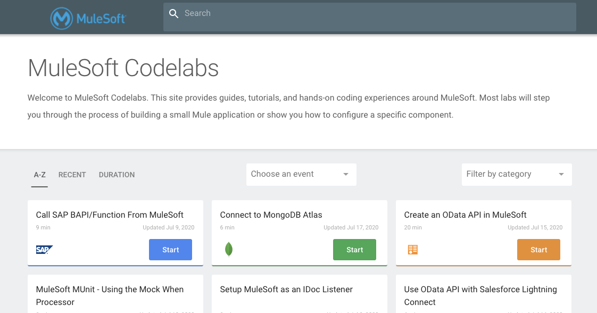
In this codelab, you're going to setup your environment to allow you to generate Codelabs from your Google Docs.
The Google Codelab CLI is written in Go and requires Go to be installed in your environment.
Navigate to https://golang.org/dl/ and click and download the latest stable release for Apple macOS
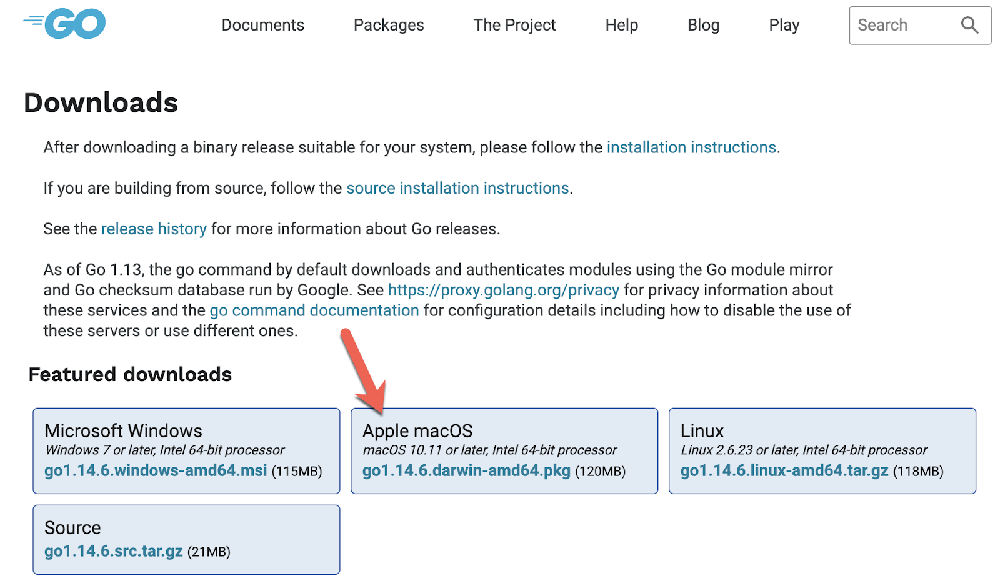
Find the downloaded *.pkg file and double click to open it, and follow the prompts to install the Go tools. The package installs the Go distribution to /usr/local/go.
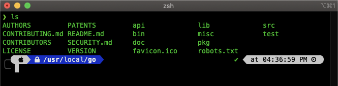
The package should put the /usr/local/go/bin directory in your PATH environment variable. You may need to restart any open Terminal sessions for the change to take effect.
You can verify the installation was successful by running the following command
go version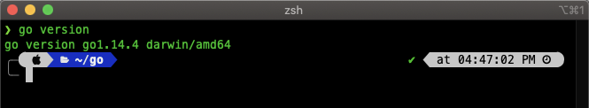
Homebrew is a free and open-source software package management system that simplifies the installation of software on macOS. If you don't have Homebrew installed yet, open a terminal and run the following command.
/bin/bash -c "$(curl -fsSL https://raw.githubusercontent.com/Homebrew/install/master/install.sh)"
Then run the following command to make sure Homebrew is up to date.
brew updateNext, install Node (npm will be installed with Node)
brew install nodeRun the following command to create a directory where you'll install claat
cd ~/
mkdir go
cd go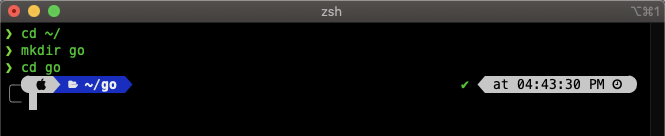
Next run the following command to install claat to the newly created directory. It'll run silently in the background and download the tool.
go get github.com/googlecodelabs/tools/claat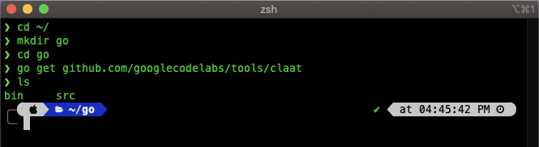
Next we need to configure the $PATH variable in your .zshrc file
Open a terminal window and run the following command. Type in your password when it prompts you.
cd ~/
sudo nano .zshrc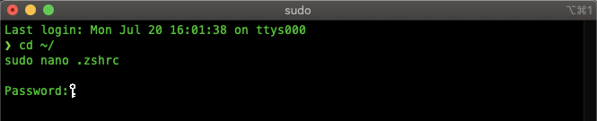
Copy and paste the following to the top and then save the file.
export PATH=$PATH:$HOME/go/bin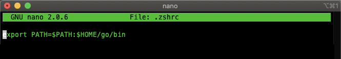
Let's test to see if claat was installed correctly. Run the following command.
claat helpIf everything was configured correctly, you should see the help manual for the tool.
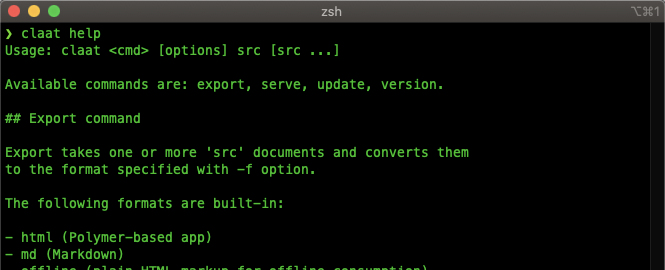
Open the following link and click on the Add to Chrome button to install the Preview Codelab plugin to Chrome.
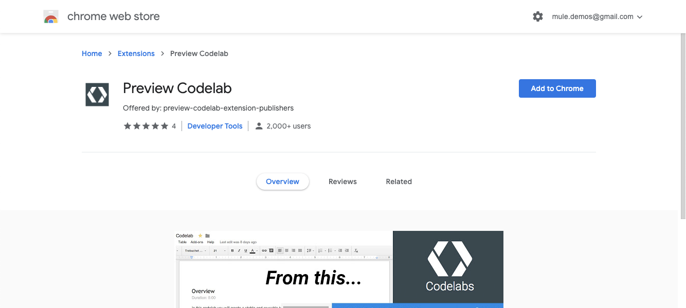
Once installed, the plugin allows you to preview your Google Doc as a Codelab site.
Let's test out the plugin. Go ahead and open this example Google doc.
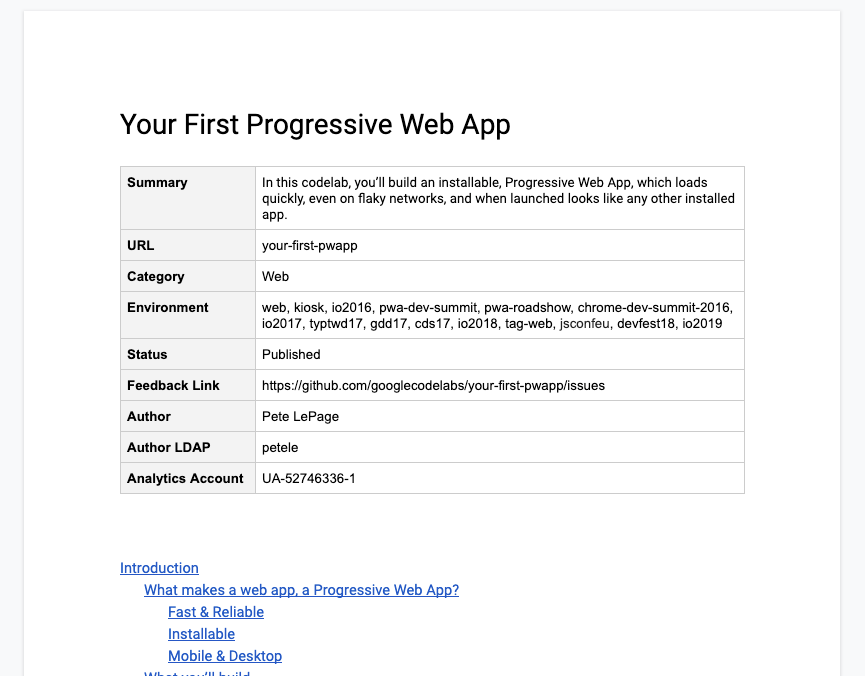
You can read more about the format of this example doc in the Codelab Formatting Guide. It provides details on the formatting needed when creating a codelab. You'll notice that the table at the top of the document describes the metadata required for the claat tool to generate the Codelab.
With the tab to the document open, in the top right corner of Chrome, click on the Extensions icon and then click on Preview Codelab
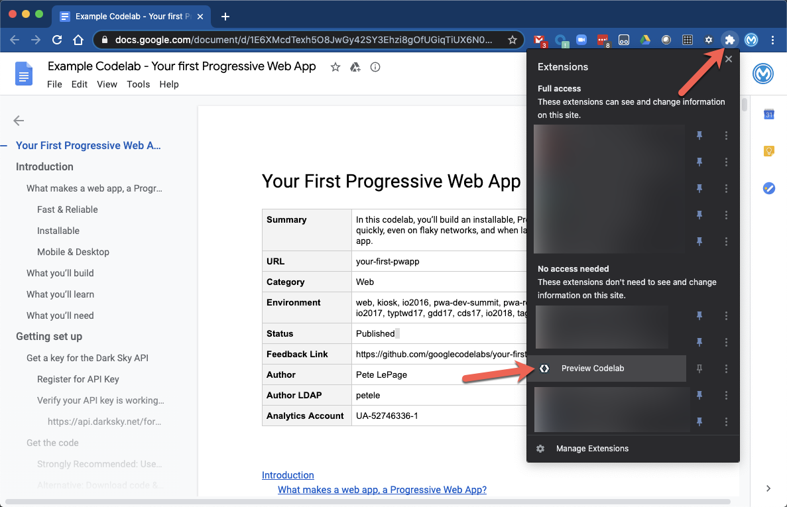
A new tab will pop up with the auto-generated Codelab site.
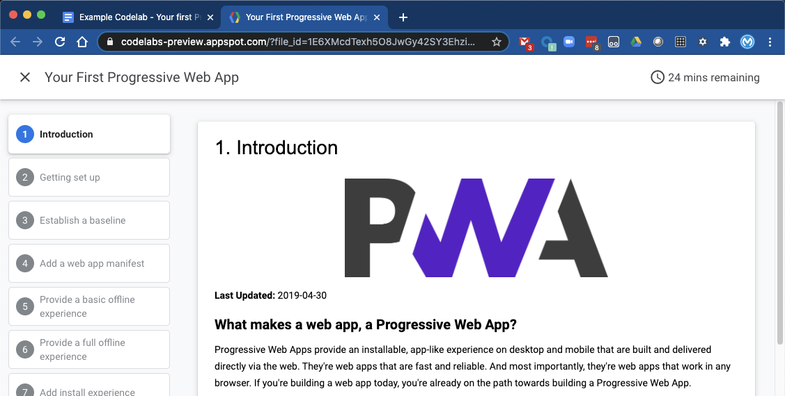
Lastly, let's test out the claat tool and learn how to generate a Codelab from a Google Doc. Using the example doc from the previous section, copy down the Google Doc ID in the URL
1E6XMcdTexh5O8JwGy42SY3Ehzi8gOfUGiqTiUX6N04o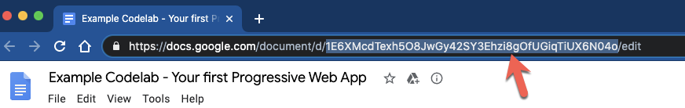
Switch to a macOS terminal window and run the following command to navigate back to your home directory, create a Codelab folder, and open that folder.
cd ~/
mkdir codelab
cd codelab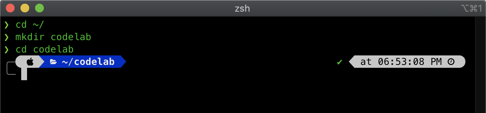
Run the claat command below to generate the Codelab for the document.
claat export 1E6XMcdTexh5O8JwGy42SY3Ehzi8gOfUGiqTiUX6N04o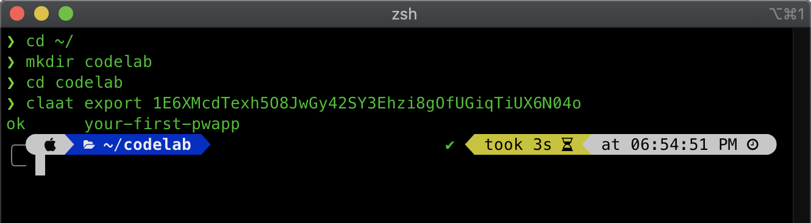
If claat is installed correctly, the next line after running the command will be
ok your-first-pwappclaat also provides the ability serve the page up locally. You can run the following command:
claat serve
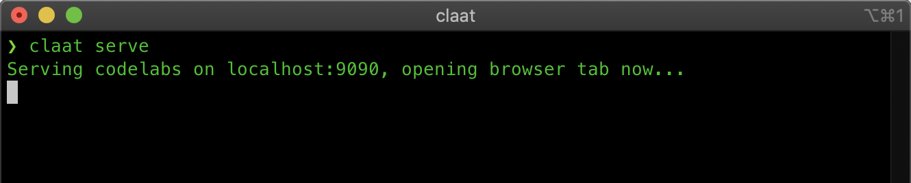
Chrome will open a new tab showing a link to the Codelab.
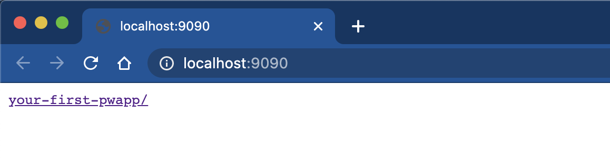
Click on the link to see the Codelab and walk through to examine the formatting.
Congratulations, you're environment is setup to start developing Codelabs. You have the tool installed locally to generate a Codelab and you have a plugin installed in Chrome to see a preview before you generate the Codelab from your environment.
Check out some of these codelabs...